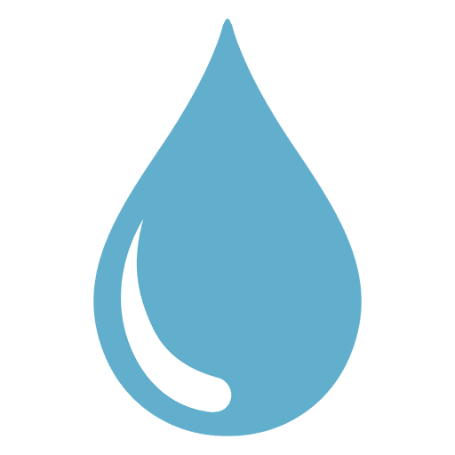

<ion-header [translucent]="true">
  <ion-toolbar>
    <ion-buttons slots="start">
      <ion-back-button defaultHref="/home"></ion-back-button>
      <ion-title>WaterBalance</ion-title>
    </ion-buttons>
  </ion-toolbar>
</ion-header>


<ion-content [fullscreen]="true">
  <ion-header collapse="condense">
    <ion-toolbar>
      <ion-title size="large">Ingreso</ion-title>
    </ion-toolbar>
  </ion-header>
</ion-content>

<ion-content class="container">
  <div>
    <ion-card>
      <ion-card-title>
        <h1>Ingreso consumo de agua:</h1>
      </ion-card-title>
      <ion-card-content>
        <div class="animated-image centrado">
          <ion-item>
            
          </ion-item>
        </div>
        <ion-item>
          <p class="centrado">Dia: {{ today | date: 'EEEE' }}</p>
        </ion-item>
        <ion-item>
          <ion-input type="number" label="Ingrese cantidad de agua:" [(ngModel)]="mlAgua"placeholder=""></ion-input>ml
        </ion-item>
        <ion-item>
        </ion-item>
        <ion-button (click)="ingresar()">Ingresar</ion-button>
      </ion-card-content>
    </ion-card>
  </div>
</ion-content>

<ion-footer>
  <ion-toolbar>
    <ion-title>App desarrollada por: Sebastián Corvalan</ion-title>
  </ion-toolbar>
</ion-footer>